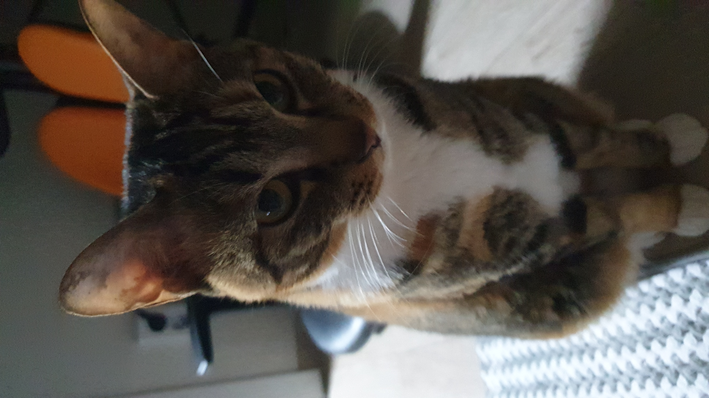

- 꿀배
- 마음
- 뽀뽀
- 구름
마음이를 소개 합니다.
검정 노랑색 쟈켓을 입고있는 듯한 모습의 어여쁜 다섯살 여자 고양이 입니다.
마음이는 조금 까탈스러운 면을 가지고 있어요.
까탈스럽고 예민한 성격을 가진만큼 집사에 대한 소유욕이 강한 아이랍니다.
애교도 철철 넘쳐 흐르고요. 무엇보다 얼굴을 가만히 바라보면 얼마나 예쁜지 몰라요.
그리고 굉장한 수다쟁이에요. 특히 배가 고프면 밥을 내놓으라며 얼마나 칭얼대는지 모릅니다.
밤새 잠을 자고 아침이 되면 똑똑하게도
집사의 입술에 손을 가져다 대며 밥을 먹고싶다는 의사표현도 할 줄 아는 아이에요!
